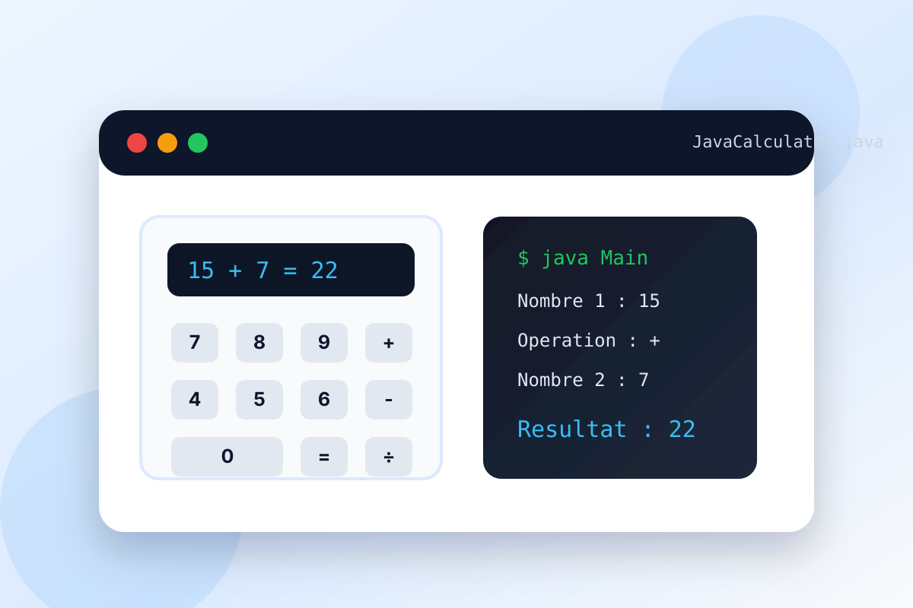
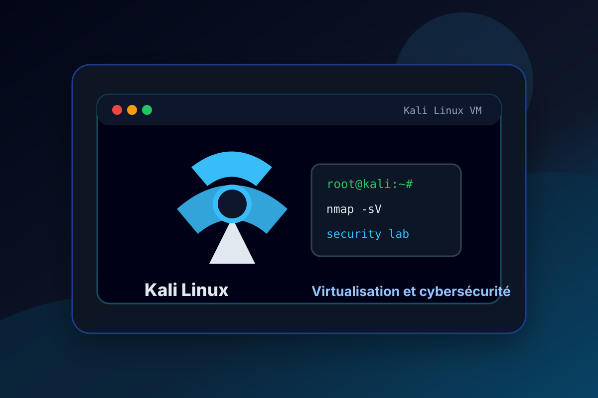
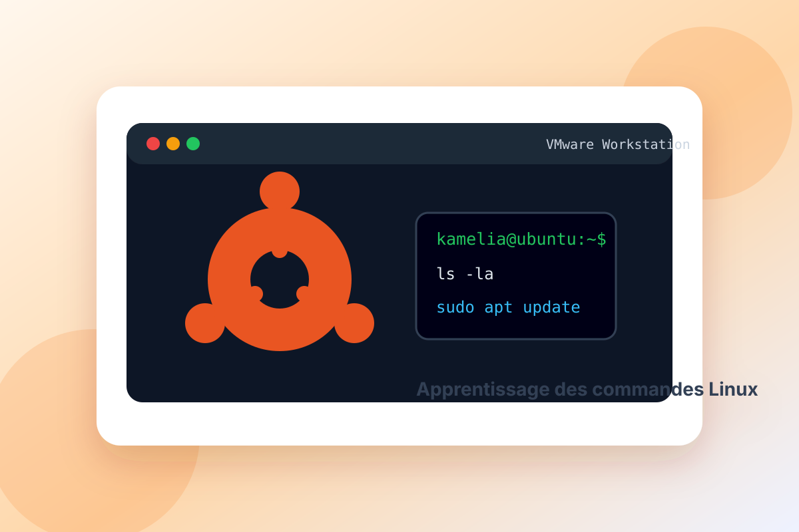

Projets
Voici une sélection de mes projets réalisés dans le cadre de ma formation en BTS SIO SLAM, incluant des développements web, des bases de données et des applications métiers.

AP2 Bibliothèque
Application


Application de gestion de bibliothèque en Java
Année : 2025/2026
Description du projet
Ce projet PPE1 est une application desktop développée en Java pour gérer une bibliothèque. L'application propose une interface graphique Java Swing permettant de gérer les auteurs, les livres, les emprunteurs et les emprunts depuis plusieurs écrans dédiés.
Le projet utilise une architecture organisée en MVC avec des classes Controller, DAO, Model et View. Les données sont stockées dans une base SQLite, ce qui permet d'ajouter, consulter, modifier, supprimer et rechercher les informations de la bibliothèque.
Fonctionnalités
- Gestion des auteurs : ajout, affichage, modification, suppression et recherche
- Gestion des livres avec titre, langue, ISBN, année, pages, dates et auteur associé
- Gestion des emprunteurs
- Gestion des emprunts avec dates de retour et statut
- Interface graphique Java Swing avec plusieurs fenêtres
Technologies utilisées
- Java
- Java Swing
- SQLite
- JDBC
- Architecture MVC
- DAO
- NetBeans
Compétences développées
- Conception d'une application Java avec interface graphique
- Organisation du code en couches MVC
- Connexion à une base de données avec JDBC
- Création de requêtes SQL pour le CRUD et la recherche
- Manipulation des modèles Auteur, Livre, Emprunteur et Emprunt

ATC Services
Site web


ATC Services — site web de réservation
Année : 2025/2026
Description du projet
ATC Services est un site web développé en PHP, HTML et CSS autour d'un service de réservation de transport. Il permet aux utilisateurs de consulter les véhicules disponibles, de se connecter et d'effectuer une réservation.
Une interface administrateur permet de gérer les disponibilités, les informations associées aux véhicules et le suivi des réservations.
Fonctionnalités
- Authentification des utilisateurs
- Gestion des rôles
- Affichage des véhicules disponibles
- Création d’une réservation
- Interface administrateur
Technologies utilisées
- HTML
- CSS
- PHP
- SQL
- MySQL

Site web d'un magasin optique
Développement web


Site vitrine pour un magasin d’optique
Année : 2024
Description du projet
Dans le cadre de ma formation BTS SIO option SLAM, j’ai conçu et développé un site vitrine pour un magasin d’optique. Ce site a pour objectif de présenter les produits et services proposés par le magasin tout en facilitant la prise de contact avec les clients.
Le site contient une page d’accueil, une galerie de modèles de lunettes, une page dédiée aux services et un formulaire de contact.
Technologies utilisées
- HTML
- CSS
- JavaScript
Compétences développées
- Création d’une interface responsive
- Structuration d’une page web
- Mise en forme avec CSS
- Ajout d’interactions avec JavaScript

PhoneBook
Java — Application console


Projet PhoneBook en Java
Année : 2025
Description du projet
PhoneBook est une application console développée en Java permettant d’ajouter des contacts dans un annuaire téléphonique. L’utilisateur saisit un nom, un prénom et un numéro de téléphone. Les informations sont ensuite enregistrées automatiquement dans un fichier texte.
Objectif du projet
L’objectif de ce projet était de mettre en pratique les bases de la programmation orientée objet en Java, la saisie utilisateur, la manipulation de fichiers et la gestion des exceptions.
Fonctionnalités
- Saisie du nom, du prénom et du numéro de téléphone.
- Création d’un objet Contact à partir des données saisies.
- Création automatique du fichier phonebook.txt s’il n’existe pas.
- Ajout du contact dans le fichier sans supprimer les anciens contacts.
Technologies utilisées
- Java
- Maven
- IntelliJ IDEA
- Programmation orientée objet
- File, FileWriter et BufferedWriter
Compétences travaillées
- Création de classes Java.
- Utilisation d’attributs, constructeurs, getters et setters.
- Saisie utilisateur avec Scanner.
- Manipulation de fichiers texte.
- Gestion des exceptions avec try/catch.
Améliorations possibles
- Ajouter la recherche, la modification et la suppression d’un contact.
- Vérifier le format du numéro de téléphone.
- Ajouter une interface graphique avec Java Swing ou JavaFX.
- Stocker les contacts dans une base de données.

Calculatrice Java
Java - Application console
Calculatrice en Java
Année : 2024/2025
Description du projet
Ce projet est une calculatrice développée en Java sous forme d'application console. Elle permet à l'utilisateur de saisir deux nombres, de choisir une opération puis d'obtenir le résultat directement dans le terminal.
Ce travail m'a permis de pratiquer les bases de Java : lecture des entrées utilisateur, conditions, méthodes, boucles et gestion des erreurs simples comme la division par zéro.
Fonctionnalités
- Addition, soustraction, multiplication et division
- Saisie interactive avec Scanner
- Vérification des valeurs saisies
- Gestion de la division par zéro
- Possibilité d'enchaîner plusieurs calculs
Technologies utilisées
- Java
- JDK
- Programmation orientée objet
- Git et GitHub
Compétences développées
- Création d'un projet Java simple
- Utilisation des variables et des conditions
- Organisation du code avec des méthodes
- Compilation et exécution avec javac et java
- Mise en ligne du projet sur GitHub

To-Do List
Développement web


Application To-Do List
Année : 2025
Description du projet
Cette application web permet de gérer une liste de tâches de manière simple et interactive. Elle a été développée afin de mettre en pratique les bases du développement web et la manipulation du DOM avec JavaScript.
Fonctionnalités
- Ajout de nouvelles tâches
- Suppression de tâches
- Marquage des tâches comme terminées
- Mise à jour dynamique de l’interface
Technologies utilisées
- HTML
- CSS
- JavaScript
Compétences développées
- Manipulation du DOM
- Gestion des événements utilisateur
- Développement d’une application interactive

Kali Linux
Cybersécurité - Virtualisation
Installation et configuration de Kali Linux
Année : 2024/2025
Description du projet
Ce projet consiste à installer et configurer une machine virtuelle Kali Linux sur mon PC, d'abord avec VirtualBox puis avec VMware Workstation. Kali Linux est une distribution spécialisée dans les tests de pénétration et la sécurité informatique, très utilisée dans le domaine de la cybersécurité.
Cette installation m'a permis de me familiariser avec les environnements virtuels, la configuration d'une VM et les outils de sécurité informatique utilisés pour l'analyse, les tests d'intrusion et la sécurisation d'un système.
Objectifs du projet
- Installer Kali Linux dans une machine virtuelle
- Configurer l'environnement avec VirtualBox puis VMware Workstation
- Découvrir les outils de base liés à la cybersécurité
- Comprendre l'intérêt de la virtualisation pour tester sans impacter le système principal
Technologies et outils utilisés
- Kali Linux
- VirtualBox
- VMware Workstation
- Machine virtuelle
- Outils de sécurité informatique
Compétences développées
- Installation et configuration d'un système Linux
- Création et paramétrage d'une machine virtuelle
- Découverte des environnements de tests de pénétration
- Premiers apprentissages en analyse et sécurisation informatique

Ubuntu
Linux - Virtualisation
Installation d'Ubuntu sur VMware Workstation
Année : 2024/2025
Description du projet
Ce projet scolaire consiste a installer une machine virtuelle Ubuntu sur VMware Workstation afin de decouvrir un environnement Linux et de mieux comprendre les etapes d installation d un systeme d exploitation dans une machine virtuelle.
Il m a aussi permis d apprendre et de pratiquer les commandes de base d Ubuntu, notamment la navigation dans les dossiers, la gestion des fichiers et l utilisation du terminal pour effectuer des actions simples en ligne de commande.
Objectifs du projet
- Installer Ubuntu Desktop dans une machine virtuelle
- Configurer VMware Workstation pour installer Ubuntu correctement
- Apprendre les commandes de base du terminal Ubuntu
- Comprendre le fonctionnement d un environnement Linux
Technologies et outils utilisés
- Ubuntu Desktop
- VMware Workstation
- Machine virtuelle
- Environnement Linux
- Terminal Ubuntu
Compétences développées
- Installation et configuration d'un système Ubuntu
- Utilisation d'un environnement Linux pour le développement
- Gestion d'une machine virtuelle avec VMware Workstation
- Comprehension des bases d un systeme Linux

Veille technologique
Veille technique

Veille technologique DevOps
Année : 2025/2026
Description du projet
Cette fiche présente une veille sur les pratiques DevOps, l’intégration continue, l’automatisation des déploiements et la collaboration entre développement et exploitation.
Le projet met en évidence l’importance des outils d’orchestration, des pipelines CI/CD et de la surveillance pour livrer des applications plus rapidement et de manière plus fiable.
Technologies et domaines
- Docker / conteneurs
- CI/CD
- Monitoring et automatisation
- Cloud / infrastructures
Compétences développées
- Analyse des flux de déploiement
- Compréhension des bonnes pratiques DevOps
- Veille technologique et synthèse
- Préparation à des environnements professionnels modernes